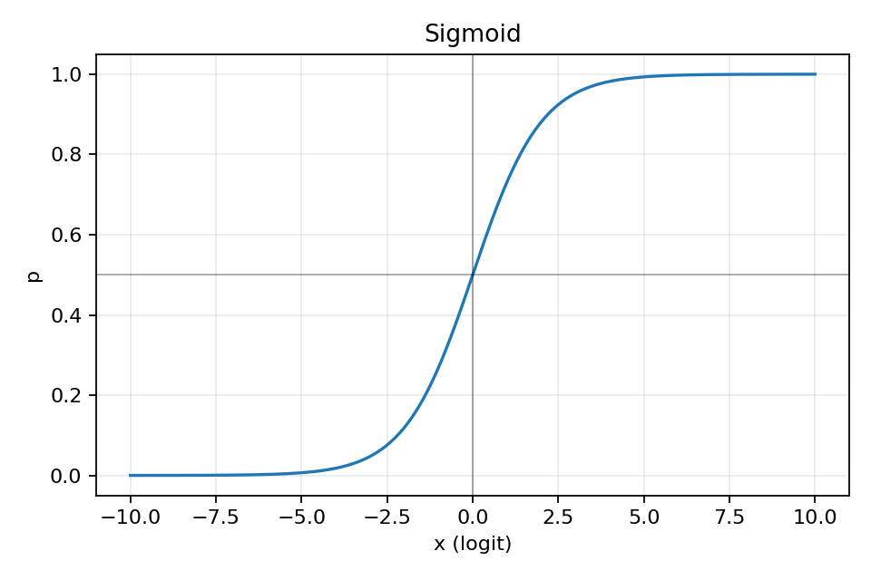
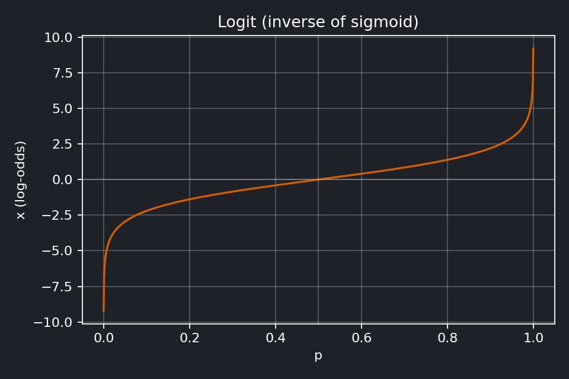
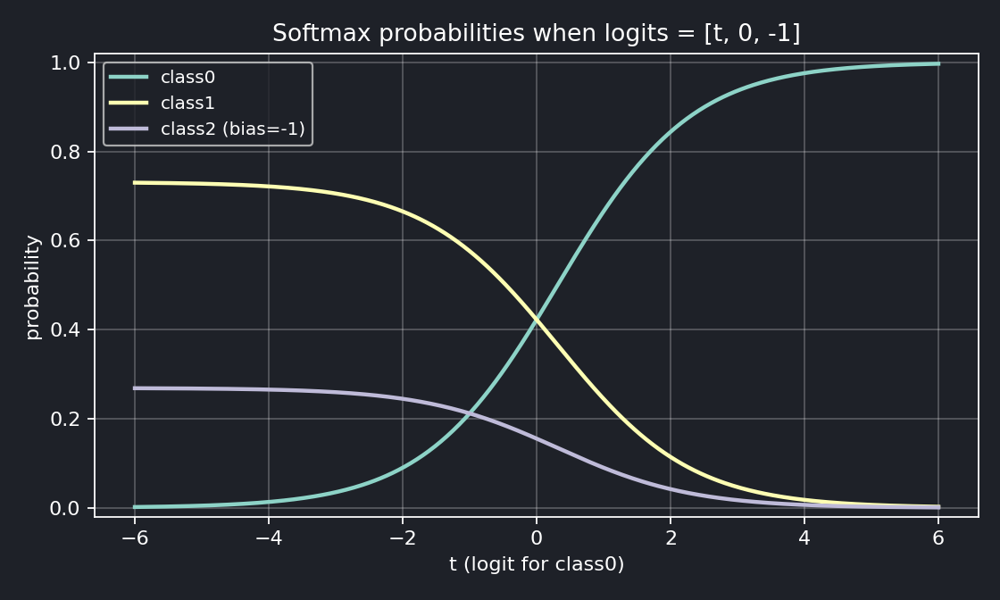

分類ネットワークの最終層では、実数値を確率として解釈可能な値へ変換する処理が行われる。 (最終層のノード数を1つとした)二値分類などで用いられるのが sigmoid 関数で、 これは実数値を 0 から 1 の範囲に写像する。 sigmoid の逆関数として定義されるのが logit 関数であり、この関係から、 sigmoid 適用前の実数値はロジット値と呼ばれることがある。 一方、複数クラスのうちいずれか一つを選択するような分類問題では、 複数の実数値を総和が 1 となる確率分布に変換するために softmax 関数が用いられる。
二値分類において、logit $x$ から確率 $p$ を得る写像は
$$ p = \sigma(x) = \frac{1}{1 + e^{-x}} $$
sigmoid の逆写像は logit 関数であり、 確率 $p \in (0,1)$ を実数全体に写す：
$$ \text{logit}(p) = \log \frac{p}{1-p} $$
クラス数 $C$ の分類では、logits $\mathbf{z} = (z_1, \dots, z_C)$ に対して softmax を適用する：
$$ p_i = \frac{e^{z_i}}{\sum_{j=1}^C e^{z_j}} $$
固定しているのは確率ではなく logit である。3つの確率は
$$ p_0 = \frac{e^{t}}{e^{t} + e^{0} + e^{-1}}, \quad p_1 = \frac{e^{0}}{e^{t} + e^{0} + e^{-1}}, \quad p_2 = \frac{e^{-1}}{e^{t} + e^{0} + e^{-1}} $$すべての logit に同じ数 $c$ を足しても、確率は変わらない（分子と分母に $e^{c}$ が掛かって消える）：
$$ \frac{e^{z_i + c}}{\sum_j e^{z_j + c}} = \frac{e^{z_i}}{\sum_j e^{z_j}} $$だから他のクラスの logit を 0 に固定しても一般性は失われない。効いているのは logit どうしの差である。
正解が class0 なら損失は $-\log p_0$。グラフで $t$ を右へ動かす（正解クラスの logit を上げる）ほど $p_0 \to 1$、損失 $\to 0$。 訓練とは、正解クラスの logit を他のクラスとの差が開く方向へ押し上げることである。
そのため実装では CrossEntropyLoss(logits, y)
のように、softmax を含めた形で定義される。